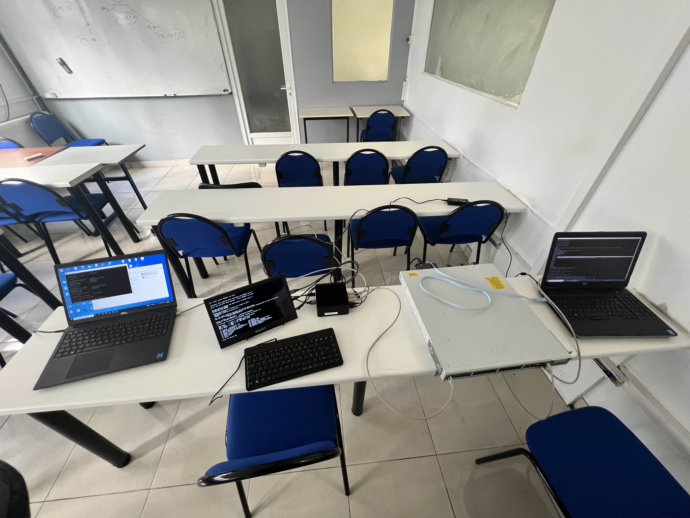
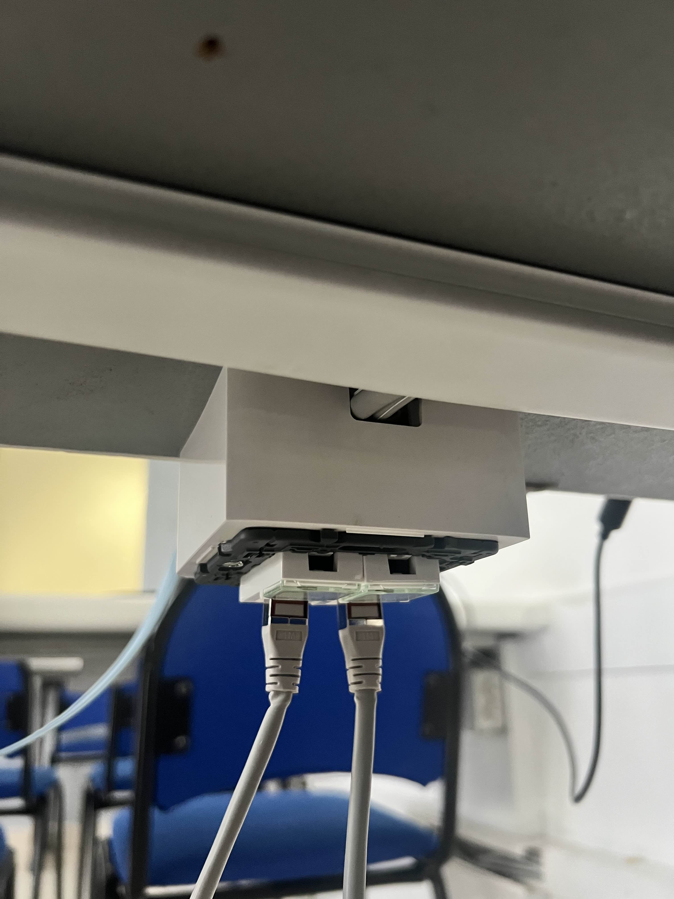
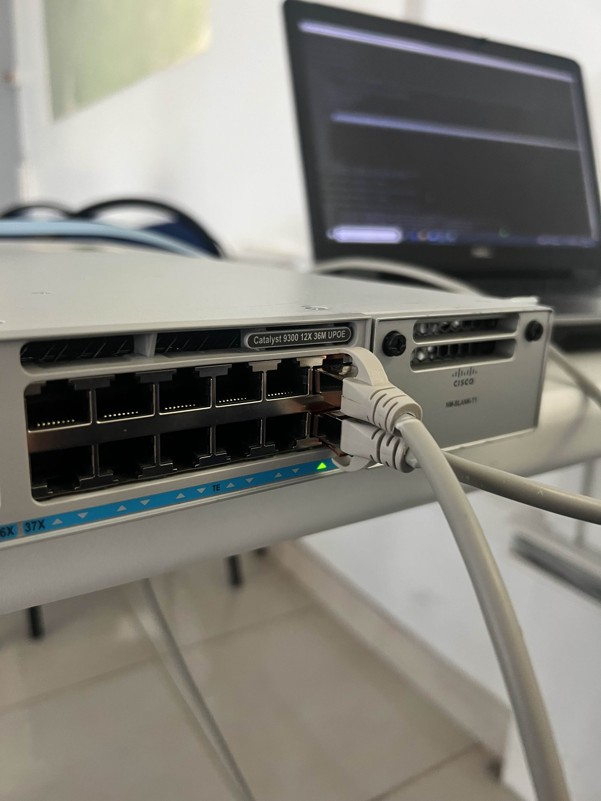
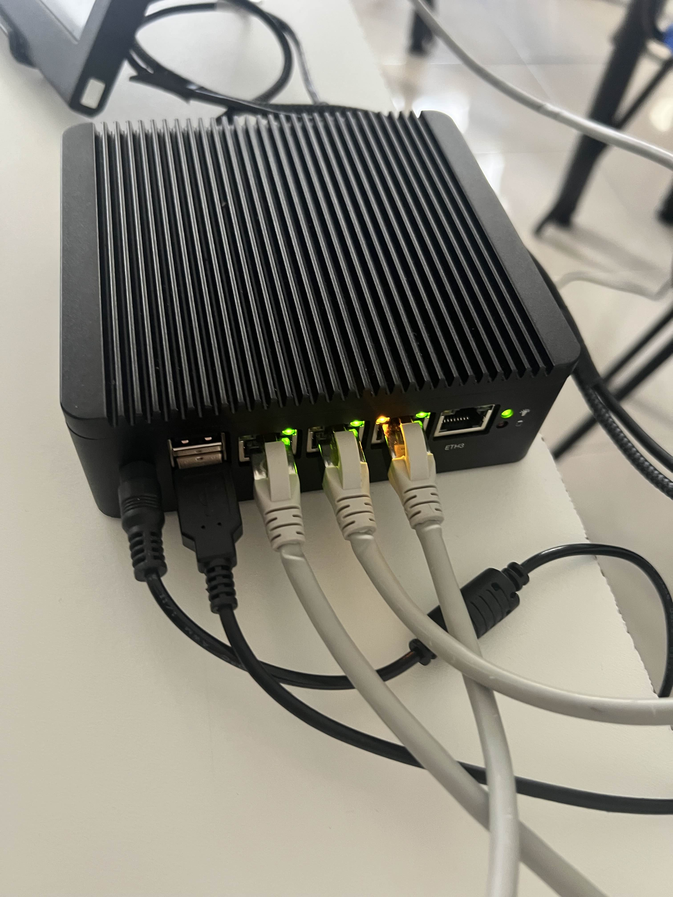
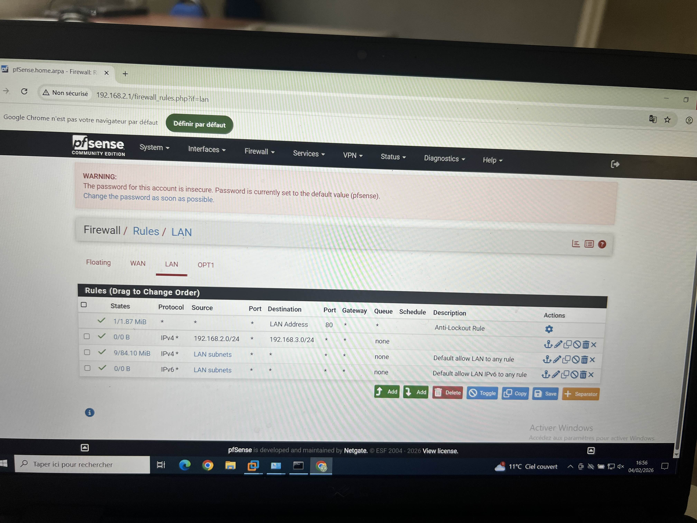
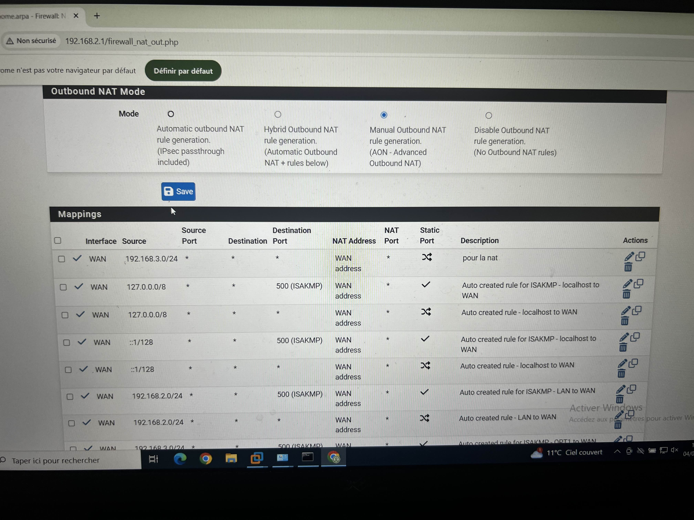

Cette première étape consiste à installer et raccorder les équipements nécessaires au projet réseau.
L'architecture est composée d'un switch Cisco Catalyst 9300, d'un pare-feu pfSense hébergé sur un mini-PC ainsi que de plusieurs ordinateurs utilisés pour l'administration et les tests.
L'objectif principal est de créer une infrastructure réseau segmentée à l'aide de VLAN afin d'améliorer la sécurité et le contrôle des communications.

Après l'installation du matériel, les prises réseau sont raccordées aux équipements actifs.
Chaque liaison Ethernet permet de relier les postes utilisateurs, le pare-feu et le switch afin d'assurer la circulation des données.
Cette étape garantit une base physique stable avant la configuration logique du réseau.

Le switch Cisco Catalyst 9300 constitue le cœur de l'infrastructure réseau.
Cette configuration permet d'isoler les différents sous-réseaux tout en maintenant une administration centralisée.

Un mini-PC a été utilisé pour héberger pfSense, une solution open source spécialisée dans la sécurité réseau.
pfSense agit comme passerelle entre les différents VLAN et les réseaux externes.

Une fois les interfaces configurées, des règles de sécurité ont été créées dans pfSense.
Ces règles permettent de contrôler précisément les échanges entre les différents VLAN et d'autoriser uniquement les communications nécessaires.

La dernière étape consiste à configurer le NAT (Network Address Translation) dans pfSense.
Cette fonctionnalité permet aux différents VLAN d'accéder au réseau externe tout en masquant leurs adresses IP privées.
Après validation des configurations, les tests de connectivité permettent de confirmer le bon fonctionnement de l'ensemble de l'infrastructure.